Laboratorio 13: Explotación de Información (visualizando la información con diferentes vistas)

En esta práctica desarrollaremos una forma para visualizar consultas
desde un grid, un gráfico y un reporte. Cabe mencionar
que trabajaremos con la base de datos de artesanias.mdb. Recuerda que tienes que copiar la base de datos al directorio Debug de tu aplicación para poder hacer la referencia relativa.

Para evitar problemas durante la elaboración en clase del siguiente laboratorio, es indispensable que cuentes con el siguiente material:
- SAP Crystal Reports, developer version for Microsoft Visual Studio, y lo puedes encontrar en : sap.com
Y para acceder a la versión de desarrollo es necesario registrarse en el portal.
Después del registro es necesario descargar la versión compatible con Visual Studio.


Modelos
La porción del modelo de datos al que se refiere la aplicación de la práctica es la siguiente:

Las tablas que corresponden al modelo son las siguientes:Clientes (CodigoCliente,RazonSocial,Direccion,CodigoPais)
Articulos (Codigo,Descripcion,Precio)
Ventas (CodigoArticulo,CodigoCliente,Fecha,Cantidad)

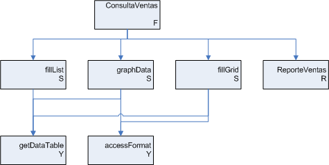
Recuerda que cada modulo genérico debe de ser etiquetado:F: Forma
S: Subrutina
R: Reporte
Y: Función
Diseño de la interfaz
Ahora descarga el siguiente .dll para poder agregar gráficas a tu proyecto:
El componente que vamos a agregar es un componente open source creado por la gente de ZedGraph.org que nos permite graficar en C#.Net, sin embargo en la versiones posteriores de Visual Studio 2008 ya se cuenta con un control que permite graficar, pero no con las características que ofrece este control. ZedGraph es un control que utiliza la licencia GPL por lo que no puedes agregarlo a tu proyecto sin dar crédito a su creador y no puedes vender el componente.
Ahora agrega ZedGraph a tu proyecto siguiendo los siguientes pasos:
Primero selecciona el menú Project y selecciona Add Reference...
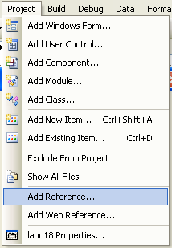
En la pantalla que aparece selecciona la pestaña Browse y ahí busca el dll que acabas de bajar y selecciónalo.
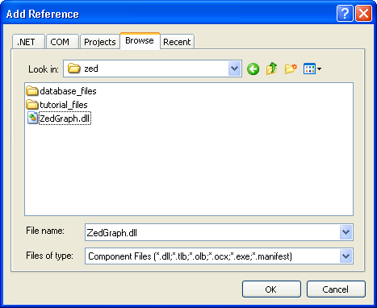
Con esto se agrega la referencia pero todavía debemos agregar el control a nuestra lista de controles, para esto selecciona la lista de controles y haz click derecho sobre el toolbox (en la imagen de arriba se ve el click derecho sobre la pestaña de All Windows Forms) y selecciona Choose Items...
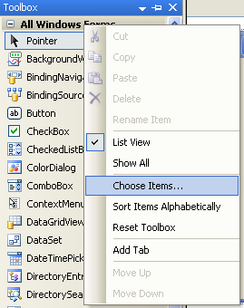
Presiona el botón browse y busca el dll que bajaste y selecciónalo. Con esto agregarás a la lista de controles un control llamado ZedGraphControl a la pestaña que estaba seleccionada en el toolbox cuando hiciste click derecho sobre él.
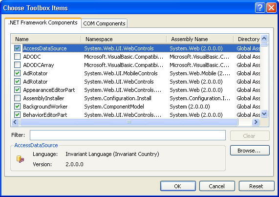
Crea la forma ConsultaVentas y agrega los siguientes controles:
Control (Nombre) Propiedades a modificar DateTimePicker (dtpDesde) Value: 1/1/1990 DateTimePicker (dtpHasta) Ninguna
CheckBox (checkCliente) Checked: True ComboBox (cmbClientes) Ninguna CheckBox (checkArticulo) Checked: True ComboBox (cmbArticulos) Ninguna DataGridView (gridVentas) Ninguna ZedGraphControl
( zedGraph )Ninguna (las vamos a modificar con código) Button
( btnConsultar)Text:&Consultar Button
( btnReportar )Text:&Reportar
Nota: Agrega una etiqueta a cada control que lo necesite, la distribución de los mismos queda a tu consideración, se recomienda que el control del gráfico sea relativamente grande para que tenga una buena visualización.
// La conexión que va a utilizar para comunicarse con la base de datos static OleDbConnection connection; /* ---------------------------------------------------------------------------------------------------- Crea una conexión con la BD de Access, solo es necesario conocer la ruta del archivo donde se encuentra la BD. @param catalogo El nombre del archivo donde se almacena la BD -------------------------------------------------------------------------------------------------- */ public static void createConnection(String catalogo) { connection = new OleDbConnection(); // Obtenemos el string con el wizard data\new datasource de .net String strConexion = @"Provider=Microsoft.Jet.OLEDB.4.0;"+ "User ID=Admin;" + "Data Source=" + catalogo; connection.ConnectionString = strConexion; try { if(connection.State == ConnectionState.Closed) connection.Open(); } catch (OleDbException ex) { msgError("No se puede abrir la conexionNota: Recuerda cambiar el NameSpace de la clase en caso de ser necesario." + Environment.NewLine + "Error: " + ex.Message); } } /** '---------------------------------------------------------------------------------------------------------' ' Grafica los puntos que se obtienen de ejecutar el query pasado como parámetro. El query debe tener la ' ' forma "SELECT ejeX, ejeY FROM..." donde ejeX puede ser cualquier tipo que sea convertible a String y ' ' ejeY tiene que ser numérico. ' ' ' ' @param zgc El ZedGraphControl que se va a utilizar para graficar ' ' @param query El query que se quiere ejecutar en la base de datos. El query debe tener la forma ' ' SELECT $, INTEGER FROM Tabla [...] ' ' en donde $ es un dato de cualquier tipo que se pueda convertir a String. ' '---------------------------------------------------------------------------------------------------------' */ public static void graphData(ZedGraphControl zgc, String query) { ZedGraph.PointPairList list = new PointPairList(); Color [] colores = {Color.AliceBlue, Color.AntiqueWhite, Color.Aqua, Color.Aquamarine, Color.Azure, Color.Beige, Color.Bisque, Color.BlanchedAlmond, Color.Blue, Color.BlueViolet, Color.BurlyWood, Color.Chartreuse, Color.Coral, Color.Cornsilk, Color.Crimson, Color.Cyan, Color.Firebrick, Color.FloralWhite, Color.ForestGreen, Color.Gainsboro, Color.Gold, Color.Green, Color.Honeydew, Color.IndianRed, Color.Lavender, Color.LemonChiffon, Color.LightBlue, Color.LightGreen, Color.LightCoral}; DataTable dt; ZedGraph.GraphPane graph; zgc.GraphPane.CurveList.Clear(); graph = zgc.GraphPane; graph.Chart.Fill = new Fill(Color.White, Color.FromArgb(220, 255, 220), 45.0F); graph.Fill = new Fill(Color.White, Color.FromArgb(220, 220, 255), 45.0F); dt = getData(query); if(dt !=null) { graph.Title.Text = dt.TableName; graph.XAxis.Title.Text = dt.Columns[0].ColumnName; graph.YAxis.Title.Text = dt.Columns[1].ColumnName; String [] nombres = new String[dt.Rows.Count]; // Obtenemos los encabezados de las columnas for (int i = 0; i < dt.Rows.Count; i++) nombres[i] = dt.Rows[i].ItemArray[0].ToString(); // Configuramos la gráfica graph.XAxis.MajorTic.IsBetweenLabels = true; graph.XAxis.Type = AxisType.Text; graph.XAxis.Scale.TextLabels = nombres; graph.XAxis.Scale.FontSpec.Size = 10.0F; graph.XAxis.Scale.FontSpec.Angle = 90; // Llenamos la grafica for (int i = 0; i< dt.Rows.Count; i++) { double x = i + 1; double y = Double.Parse(dt.Rows[i].ItemArray[1].ToString()); double z = i / 4.0; list.Add(x, y, z); } BarItem bar= graph.AddBar("", list, Color.Blue); bar.Bar.Fill = new Fill(colores); bar.Bar.Fill.Type = FillType.GradientByZ; bar.Bar.Fill.RangeMin = 0; bar.Bar.Fill.RangeMax = 4; zgc.AxisChange(); } zgc.Refresh(); } /* '---------------------------------------------------------------------------------------------------------' ' Cambia el formato del objeto pasado como parámetro a un formato que entiende SQL Server ' ' ' ' @param param El objeto que se quiere convertir a formato de SQL Server ' ' @return Un String que representa al objeto con un formato comprensible por SQL Server ' '---------------------------------------------------------------------------------------------------------' */ public static String accessFormat(Object param) { // En caso de ser un alfanumerico if (param is String) { String sParam; sParam = param.ToString(); return ("'" + sParam.Replace("'", "\'") + "'"); } else if (param is DateTime) { return "#" + ((DateTime)param).ToString("dd/MM/yyyy") + "#"; } else if (param == null) { return "null"; } else try { return param.ToString(); } catch (Exception ex) { String err; err = "Error al ejecutar " + Environment.NewLine + ex.Message; msgError(err); return "null"; } }
UtilAccess.createConnection("artesania.mdb"); UtilAccess.fillList(cmbClientes, "SELECT CodigoCliente, RazonSocial FROM Clientes"); UtilAccess.fillList(cmbArticulos, "SELECT Codigo, Descripcion FROM Articulos"); String query = "SELECT descripcion AS Articulo, SUM(cantidad) AS Cantidades " + "FROM ventas v, articulos a " + "WHERE a.codigo = v.codigoArticulo " + "GROUP BY descripcion"; UtilAccess.fillGrid(gridVentas,query); UtilAccess.graphData(zedGraph, query);
// Método para armar el query dinámicamente private String getQuery() { String query; query = "SELECT descripcion AS Articulo, SUM(cantidad) AS Cantidades " + "FROM ventas, articulos " + "WHERE articulos.codigo = ventas.codigoArticulo AND "; if (checkCliente.Checked) query += "ventas.codigoCliente = " + cmbClientes.SelectedValue + " AND "; if (checkArticulo.Checked) query += "ventas.codigoArticulo = " + cmbArticulos.SelectedValue + " AND "; query += "ventas.fecha BETWEEN " + UtilAccess.accessFormat(dtpDesde.Value) + " AND " + UtilAccess.accessFormat(dtpHasta.Value) + " GROUP BY descripcion"; return query; }Analiza la función getQuery(). ¿Qué campos se están consultando? ¿Cuáles son los nombres de columna? ¿Qué va a devolver el query? Fíjate que estamos utilizando la función accessFormat(). ¿Para qué sirve esta función? ¿Por qué es mejor usarla que cambiar el formato cada vez (piensa en qué tendrías que hacer para cambiar el manejador de la base de datos, por ejemplo, a Access 2010, del que no conoces la sintaxis en que recibe la fecha)?
Agrega el el siguiente código en cada uno de los eventos adecuados:
private void checkCliente_CheckedChanged(object sender, EventArgs e) { cmbClientes.Enabled = checkCliente.Checked; } private void checkArticulo_CheckedChanged(object sender, EventArgs e) { cmbArticulos.Enabled = checkArticulo.Checked; } private void btnConsultar_Click(object sender, EventArgs e) { String query = getQuery(); UtilAccess.graphData(zedGraph, query); UtilAccess.fillGrid(gridVentas, query); }Fíjate que el ZedGraphControl cuenta con una gran cantidad de funcionalidad. Por ejemplo, puedes seleccionar un pedazo de la gráfica con el mouse para hacer un zoom en esa parte, también puedes guardar una imagen de la gráfica o imprimirla haciendo click derecho sobre la gráfica y seleccionando la opción del menú.Creando reportes
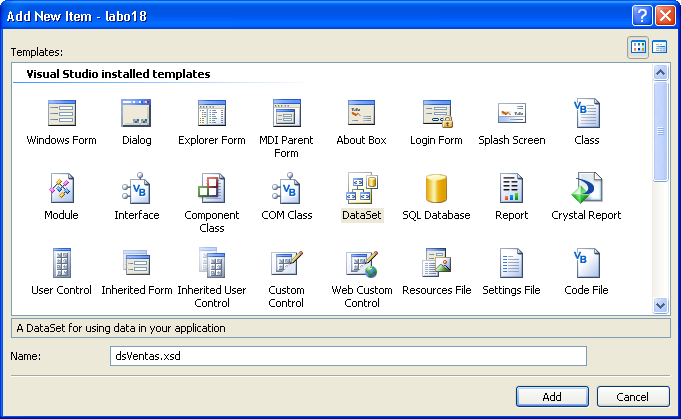
Una vez que se haya creado el DataSet selecciónalo. Va a estar en blanco por lo que hay que hacer click derecho para agregar un DataTable y después hacer click derecho sobre el DataTable para agregar las columnas que sean necesarias. En este caso sólo tendremos dos columnas Articulo y Cantidades (porque son las que obtenemos en nuestra consulta). Agrega columnas hasta que tu DataTable sea como el de la imagen:
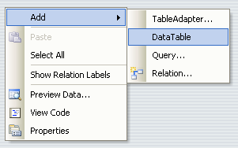
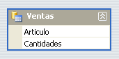
Ahora que ya tenemos el DataTable que vamos a utilizar debemos agregar un Crystal Report para poder crear el reporte. En el menú Project selecciona la opción New Item... y ahí selecciona un Crystal Report al que llamarás rptVentas
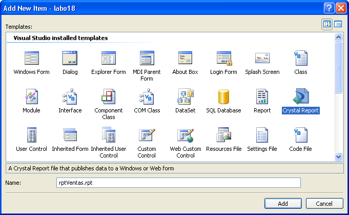
Aparecerá el asistente para la creación de reportes, como este reporte es muy sencillo vamos a dejar todas las pantallas casi iguales que como aparecen, pero para reportes más complicados podemos utilizar muchas de las opciones que nos presenta.
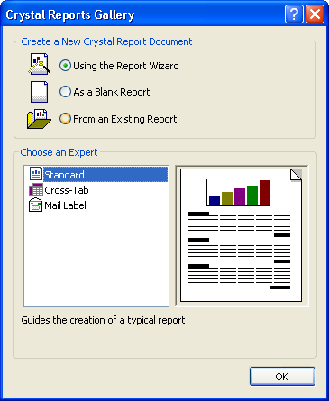
Cuando aparezca la siguiente pantalla asegúrate de seleccionar el DataSet que creamos como la base para el reporte. El DataSet se encuentra en la carpeta ADO.NET DataSets y lo agregas con las flechas que se encuentran a la mitad del asistente.
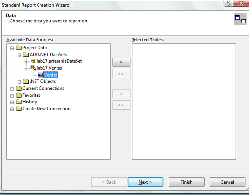
Después aparecerá una pantalla en donde nos solicitan las columnas que queremos mostrar, selecciona las dos columnas y agrégalas al reporte y después presiona Finish ya que después de esta pantalla viene información que no nos sirve para este reporte tan sencillo.
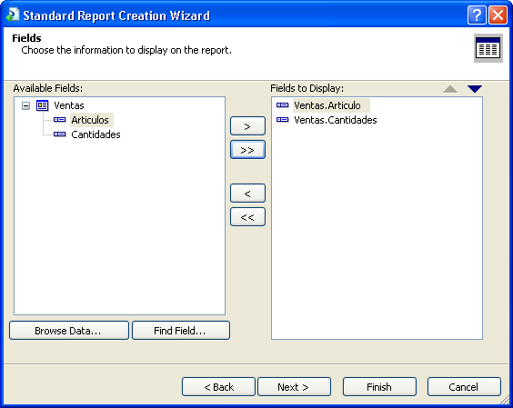
Después de agregar el reporte aparecerá rptVentas en el explorador de soluciones. Si hacemos click aparecerá un reporte con varias secciones. En esta vista del reporte podemos agregar líneas, cambiar las posiciones de lo que muestra el reporte y mejorar el formato bastante. El formato de reportes así como los reportes que incluyan agrupamiento y funciones más avanzadas los vamos a ver en uno de los próximos laboratorios.
Ya que tenemos el reporte necesitamos una forma en la que se muestre el reporte. Agrega una nueva forma llamada Visor que incluya un objeto llamado CrystalReportViewer. Este control se encuentra en la barra de herramientas bajo la etiqueta Crystal Reports.
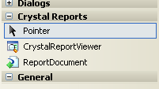
Al agregarlo a la forma, esta se convertirá en un visor para reportes en el que se le presentan varias opciones al usuario como guardar el reporte en varios formatos o imprimirlo. Ahora crea un nuevo método en la sección de Declaraciones de la clase Visor.
public void prepareReport(String query) { rptVentas report = new rptVentas(); report.SetDataSource(UtilAccess.getData(query)); reportViewer.ReportSource = report; }Para activar el reporte desde el botón btnReportar de la forma ConsultaVentas, con el criterio seleccionado, agrega el siguiente código al evento Click de dicho botón:
private void btnReportar_Click(object sender, EventArgs e) { String query = getQuery(); Visor visor = new Visor(); visor.prepareReport(query); visor.Show(); }Prueba la ejecución del reporte, cambiando el criterio de selección para observar el impacto de los cambios en el número de registros que aparecen en el reporte.
Si al ejecutar tu aplicación tienes problemas, debes realizar los siguientes pasos:Dentro de tu proyecto se encuentra el archivo App.configAgrega a tu reporte lo siguiente:
Abre dicho archivo y posteriormente modifica la sección “startup” de la siguiente manera:
<startup useLegacyV2RuntimeActivationPolicy="true"> <supportedRuntime version="v4.0" sku=".NETFramework,Version=v4.0"/> </startup>
Ventajas y características de Crystal Reports ¿Para qué sirve App.Config? ¿Qué función tiene App.Config? Realiza las validaciones pertinentes para que la aplicación no termine su ejecución por algún error no considerado, por ejemplo, el método de graficar falla cuando el query tiene menos columnas de las esperadas o cuando tiene tipos de datos diferentes a numéricos en la segunda columna.


Tu aplicación debe ser similar a esta:

Describe que cambios son necesarios en la aplicación para:
- Soportar y poder filtrar clientes por código de país
- Soportar y poder filtrar artículos por rango de precio
Realiza las modificaciones pertinentes para que tu aplicación maneje dichos cambios. Comprueba el correcto funcionamiento de tu aplicación.

La calificación de esta actividad es de
carácter individual.
Envía el laboratorio por este medio , archivo lab13 + matricula.zip.